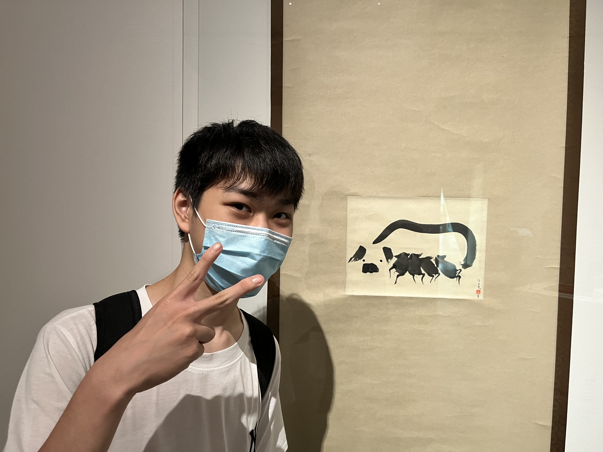

個人信息
你好，我是方崇魁，現就讀於成大附工電子科。我對電子工程充滿熱情，喜歡動手實作，並且熱衷於學習新技術。
生日：2005年5月15日
地址：台南市東區大學路1號
我來自台南市，是一名充滿好奇心和創造力的學生。我的興趣包括編程、電子設計和創新技術。我熱愛學習，並且不斷挑戰自己，以達到更高的目標。
你好，我是方崇魁，現就讀於成大附工電子科。我對電子工程充滿熱情，喜歡動手實作，並且熱衷於學習新技術。
生日：2005年5月15日
地址：台南市東區大學路1號
我來自台南市，是一名充滿好奇心和創造力的學生。我的興趣包括編程、電子設計和創新技術。我熱愛學習，並且不斷挑戰自己，以達到更高的目標。